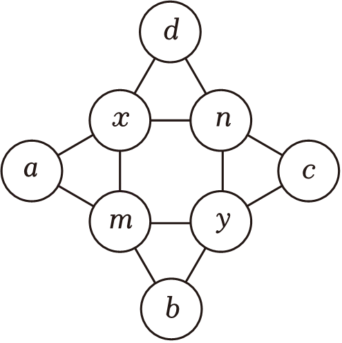
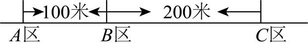

专题3.3 整式的加减（举一反三讲义）
【北师大版2024】

【题型1 判断同类项】 2
【题型2 根据同类项的概念求字母的值】 3
【题型3 合并同类项】 3
【题型4 去括号、添括号】 3
【题型5 整式的加减运算】 4
【题型6 整式的化简求值】 5
【题型7 整式加减中的无关性问题】 6
【题型8 整式加减中的不含某项问题】 6
【题型9 整式加减中的误看问题】 7
【题型10 整式加减中的遮挡问题】 7
【题型11 整式加减中的规律探索】 8
【题型12 整式加减中的新定义问题】 10
【题型13 整式加减中的多结论问题】 11
【题型14 整式加减的应用】 12
 知识点1 同类项
知识点1 同类项
所含字母相同，并且相同字母的指数也相同的项叫作同类项．几个常数项也是同类项．
知识点2 合并同类项
把多项式中的同类项合并成一项，叫作合并同类项．合并同类项后，所得项的系数是合并前各同类项的系数的和，字母连同它的指数不变．
合并同类项的一般步骤：

知识点3 去括号
1. 去括号方法
一般地，一个数与一个多项式相乘，需要去括号，去括号就是用括号外的数乘括号内的每一项，再把所得的积相加．如果括号外的乘数是正数，去括号后原括号内各项的符号与原来的符号相同；如果括号外的乘数是负数，去括号后原括号内各项的符号与原来的符号相反．
2. 依据：分配律a(b+c)=ab+ac.
3. 多层括号的去法：一般由内向外，先去小括号，再去中括号，最后去大括号．
知识点4 整式的加减
整式加减的运算法则：几个整式相加减，如果有括号就先去括号，然后再合并同类项．
应用整式加减的运算法则化简求值时，一般先去括号、合并同类项，再代入字母的值进行计算，简记为“一化、二代、三计算”．在具体运算中，也可以先将同类项合并，再去括号，但是要按运算顺序去做．例如，−2(x−3x+5x−7x+6)=−2(−4x+6)=8x−12．
【题型1 判断同类项】
【例1】（24-25七年级上·北京·期中）多项式a3−a2b+ab2+a2b−ab2+b3中，______ 与______是同类项；______与______是同类项．
【变式1-1】（24-25七年级上·江苏宿迁·期末）写出一个与−3y2是同类项的单项式，则这个单项式可以是 ．
【变式1-2】（24-25七年级上·山东滨州·期末）下列单项式：−a3b2，2a2b33，a2b，ab3中，a2b3的同类项的系数是（ ）
A．−1 B．1 C．2 D．23
【变式1-3】（24-25七年级上·河南郑州·期末）下列各组中的两项，属于同类项的是（ ）
A．−2x2y与2xy2 B．5x2y与−0.5x2z
C．−0.5xy与xyz D．3mn与−4nm
【题型2 根据同类项的概念求字母的值】
【例2】（24-25七年级上·陕西榆林·阶段练习）单项式7x1−ay与−2x3yb是同类项，则ab的值为（ ）
A．−2 B．−4 C．2 D．4
【变式2-1】（24-25七年级上·上海·阶段练习）如果23x6ym与−4xny2是同类项，那么nm= ．
【变式2-2】（24-25七年级上·福建漳州·期中）若−xmy4与112x3yn是同类项，则m−n9的值为（ ）
A．1 B．−1 C．0 D．1或−1
【变式2-3】（24-25七年级下·四川雅安·期中）已知23x2mym+1与3xny3是同类项，则m−n的值为 ．
【题型3 合并同类项】
【例3】（24-25七年级上·北京昌平·期中）先合并同类项，再求代数式的值：
已知a−122+b+1=0，求6a2b−3ab2−5a2b+4ab2的值．
【变式3-1】（24-25七年级上·上海崇明·期中）合并同类项：5x2−8x+6−3x2+6x−3= ．
【变式3-2】（24-25七年级上·山西太原·期末）三个连续整数中，若最小的数用m表示，则这三个数的和用含m的代数式表示为 ．
【变式3-3】（24-25七年级上·广西贵港·期中）实践探究：根据合并同类项法则，得6x−3x+x=(6−3+1)x=4x．类似的，如果把(a+b)看成一个整体，那么6(a+b)−3(a+b)+(a+b)=(6−3+1)(a+b)=4(a+b)．这种解决问题的思想方法被称为“整体思想”，广泛运用于在多项式的化简与求值中．
据此解答以下问题：
(1)把(a−b)2看成一个整体，合并2(a−b)2−4(a−b)2+3(a−b)2的结果是____；
(2)已知x2−2y=1，求2024x2−4048y+1的值．
【题型4 去括号、添括号】
【例4】（24-25八年级上·重庆秀山·期末）在5个字母a，b，c，d，e中（均不为零），不改变字母的顺序，在每相邻两个字母之间都添加一个“+”或者一个“-”组成一个多项式，且从字母a，b之间开始从左至右所添加的“+”或“-”交替依次出现，再在这个多项式中，任意添加两个括号（括号内至少有两个字母，且括号中不再含有括号），添加括号后仍只含有加减运算，然后再进行去括号运算，我们称为“添减括号操作”．
例如：a+b−c+d−e=a+b−c−d−e，a+b−c+d−e=a+b−c−d+e．
下列说法：
①所有的“添减括号操作”共有7种不同运算结果；
②不存在两种“添减括号操作”，使它们的运算结果求和后为0；
③存在“添减括号操作”，使其运算结果与其未加括号之前的多项式相等．
其中正确的个数是（ ）
A．0 B．1 C．2 D．3
【变式4-1】（24-25七年级上·河南南阳·期末）在括号内填上适当的项：3−x2+3xy−y3=3−（ ）．
【变式4-2】（24-25六年级上·山东淄博·阶段练习）下列各式中与a−b−c的值不相等的是（ ）
A．a−b+c B．a−b−c C．a−b+−c D．−c−b−a
【变式4-3】（24-25七年级上·全国·随堂练习）p−[q−2p−(p+q)]去括号后应为（ ）
A．−2p B．4p C．2p D．2p−2q
【题型5 整式的加减运算】
【例5】（24-25六年级上·上海普陀·期末）已知两个一次式分别是5m−6+3n和−7m+3n−12．
(1)求5m−6+3n与−7m+3n−12的和；
(2)当m和n为正整数时，5m−6+3n减去−7m+3n−12的差能否被6整除？请说明理由．
【变式5-1】（24-25七年级上·贵州遵义·期末）（1）从下列①②③④中任选3个代数式求和．
①22，②13×3，③−4，④12025
（2）下面是小欣同学整式化简过程：
17．化简：3x2−2y+23y+5x2 解：原式=3x2−6y+6y+5x2第①步 =3x2+5x2+−6y+6y第②步 =8x2−12y第③步 |
小欣同学的化简过程是从第____________步开始出现错误的；
请写出正确的化简过程．
【变式5-2】学习《整式》后，在一次数学活动中，乐乐对悠悠说：“你在心里想好一个两位数，将个位数字乘5，然后加3，再将所得新数乘2，最后将得到的数加十位数字，把你的结果告诉我，我就知道你心里想的两位数．”
(1)如果悠悠的计算结果是38，那么乐乐的答案是 ；
(2)通过两人的对话，你能判断乐乐说得对吗？请你用多项式的相关知识说明．
【变式5-3】（24-25七年级上·山东济宁·期末）已知a，b为有理数，现规定一种新的运算符号，定义aΔb=−a+2b，例如：4Δ5=−4+2×5=6，请根据符号的意义解答下列问题：
(1)求2Δ3Δ4的值；
(2)若m=aΔa2+3a，n=a2+aΔ3a−1，试判断m、n的大小，并说明理由．
【题型6 整式的化简求值】
【例6】（24-25七年级上·广东深圳·期中）在如图所示，每个小三角形的三个顶点上的数字之和都与中间正方形四个顶点上的数字之和相等，已知n=5，m=−2，那么a+b−c−d= ．

【变式6-1】（24-25七年级上·安徽合肥·期中）已知m−n=3，p+q=2，则n+2p−m−2q的值为（ ）
A．−5 B．5 C．−1 D．1
【变式6-2】（24-25七年级上·上海·期中）我们约定：上方相邻两数之和等于这两数下方箭头共同指向的数，例如：在图1中，即5+6=11，若a,b满足|a−3|+(b+1)2=0，则图2中y的值为 ．

【变式6-3】（24-25九年级上·江苏南通·期中）已知3x2−4xy+7y2−2m=−17，x2+5xy+6y2−m=12，则式子x2−14xy−5y2的值为（ ）
A．−41 B．−412 C．−72 D．72
【题型7 整式加减中的无关性问题】
【例7】若代数式2x2+ax−y+6−bx2−3x+5y−1的值与字母x的取值无关，则代数式2a3−2b2−a3−3b2的值为 ．
【变式7-1】（24-25七年级上·重庆九龙坡·期末）已知无论x，y取什么值，多项式2x2−my+9−nx2−5y−4的值都等于定值13，则m+n= ．
【变式7-2】（24-25七年级上·湖北武汉·期末）已知a，b，c，d为常数，P=ax2+by+x，Q=6x2+3y+cx，若3P+Q的取值与无关，P−2Q是不含y的多项式，且bx−a+dx−c=5恒成立，则ad+bc的值为（ ）
A．−6 B．0 C．6 D．5
【变式7-3】（24-25七年级下·浙江金华·期中）如图，小长方形纸片的长为a，宽为b，且a>b，将7张纸片按图示不重叠的放在长方形ABCD内，未被覆盖的部分恰好被分割为两个长方形，面积分别为S1和S2．

（1）当a=8，b=2，AD=20时，S2−S1的值为 ；
（2）若AB长度保持不变，AD变长，将这7张小长方形纸片还按照同样的方式放在新的长方形ABCD内，当3S2−5S1的值与AD的长度无关时，a、b满足的关系式是 ．
【题型8 整式加减中的不含某项问题】
【例8】（24-25七年级上·重庆·期末）已知关于x的多项式A、B，其中A=5mx2+2x−3，B=x2−nx+1（m，n为常数），若A−2B的结果不含x2项和x项，则m+n的值为（ ）
A．75 B．−75 C．35 D．−35
【变式8-1】（24-25七年级上·四川南充·期中）若关于a、b的多项式22a2+ab−3b2与−3a2+mab+2b2的和不含ab，则m的值是 ．
【变式8-2】（24-25七年级下·甘肃兰州·期中）已知关于x、y的多项式5x2−2xy2−3xy+4y2+9xy−2y2−2mxy2+7x2
(1)若该多项式不含三次项，求m的值；
(2)在（1）的条件下，当x2+y2=13，xy=−6时，求该多项式的值．
【变式8-3】（24-25七年级上·四川成都·期末）已知：A=3x2+kxy+y−1与B=y2−xy+13x．
(1)若−2A−22B−A−A中不含xy项，求k的值；
(2)若x−1=3，y2=9，x−y=y−x，且A−B=0，求k的值．
【题型9 整式加减中的误看问题】
【例9】有一道题目是一个多项式A减去多项式2x2+5x−3，小胡同学将2x2+5x−3抄成了2x2+5x+3，计算结果是−x2+3x−7，这道题目的正确结果是（ ）
A． x2+8x−4 B．−x2+3x−1 C．−3x2−x−7 D． x2+3x−7
【变式9-1】（24-25七年级上·安徽安庆·期中）小明做一道数学题“已知两个多项式A、B．A=⋯，B=x2+3x−2，计算3A+B”，小明误把“3A+B”看成“A+3B”，求得的结果为5x2−2x+3．
(1)请求出3A+B的正确结果；
(2)若多项式C=mx2−nx+1且A−C的结果不含x2项和x项，求m、n的值．
【变式9-2】（24-25七年级上·四川南充·期中）已知多项式B=3x2y−2xy+x+2，欣欣在计算“A+B”时， 误看成了“A−B”， 得到结果为6x2y+4xy−2x−1．
(1)求多项式A；
(2)请你求出的正确答案(写出计算过程) ．
【变式9-3】（24-25七年级上·河北廊坊·期末）老师在黑板上书写了一个计算题目，并用左手遮挡了多项式A的二次项系数．如图：
已知两个多项式A= |
 x2−4x，B=3x2+3x−2，试求A+3B．
x2−4x，B=3x2+3x−2，试求A+3B．然后告知该题A+3B的正确答案是x2+5x−6．
(1)请求出A中被遮挡的二次项系数．
(2)老师又给出了一个多项式C，并要求求出A−C的结果．小马虎在求解时，误把“A−C”看成“A+C”，进而求出的答案为x2−7x−3．现请你修正小马虎的错误，求出“A−C”的正确答案．
【题型10 整式加减中的遮挡问题】
【例10】印卷时，工人不小心把一道化简题前面的一个数字遮住了，结果变成■x2y−[5xy2−2(−23xy+32x2y)−43xy]+5xy2.
(1)某同学辨认后把“■”猜成10，请你算算他的结果是多少？
(2)老师说“你猜错了，我看到题目遮挡的数字是单项式−4x2y3的系数和次数之积”，那么被遮挡住的数字是几？
(3)若化简结果是一个常数，请你再算遮挡的数字又是多少？
【变式10-1】（24-25七年级上·河北唐山·期末）小明的家庭作业中有一道化简题：∗x2+32x+4−234x+3x2−2发现系数“*”印刷不清楚．
(1)他把“*”猜成2，请帮助小明化简：2x2+32x+4−234x+3x2−2；
(2)老师给出标准答案的结果是常数．通过计算说明原题中“*”是多少？
【变式10-2】（24-25七年级上·陕西咸阳·期末）某数学兴趣小组利用A，B，C，D四张卡片做游戏，卡片上分别写有已经化为最简的代数式，C，D两张卡片上有部分内容被遮挡住了，但知道它们是A，B两张卡片上代数式的和或差．
请通过计算分别求出C，D卡片上的代数式．
【变式10-3】（2025·河北·模拟预测）老师在黑板上给小明写出了一道计算题，如图所示，系数“圆”没有写清楚．
计算：■x2+6x+8−32x+x2−1 解： |
(1)小明认为“■”是“−1”，请求出这道题的结果；
(2)根据下面小刚对小明的提示，完成下列问题：
①小刚说：“当x的值是−1时，这道题的值为−2”，求此时系数“■”的值；
②小刚说：“这道题最后的结果是个常数”，求此时系数“■”的值．
【题型11 整式加减中的规律探索】
【例11】（2025·安徽合肥·一模）宇宙中存在一种神秘的黑洞天体，数学中也有一种神秘的“黑洞”数字，数学兴趣小组在研究“黑洞”数字时，在0到9之间，任取一组不全相等的三个数字，从大到小排列得到最大数，再从小到大排列得到最小数，然后用最大数减去最小数，得到一个新数，再按照上述方式重新排列，再相减，再得到一个新数…一直重复操作，
例如．
第1组：数字1，2，0，则210−12=198；
第2组：数字1，9，8，则981−189=792；
第3组：数字7，9，2，则972−279=693；
第4组：数字6，9，3，则_________________．
(1)根据规律，补充第4组横线的内容；
(2)小组成员A发现：任取这样一组不全相等的三个数字，经过有限次上述“重排求差”操作后，最终会得到一个确定的“黑洞”数字，这个数是________________；
(3)小组成员B发现：在上述“重排求整”操作中，最大数和最小数的差能被99整除，推过程如下：
设一组三个数字为a，b，c，不妨设a≥b≥c，且a，b，c不全相等，最大数可表示为__________________，最小数可表示为___________________，则最大数−最小数=99（____________），所以最大数和最小数的差能被99除．
【变式11-1】（24-25七年级上·贵州安顺·期末）将连续的奇数1，3，5，7，…，排成如下的数表：十字框框出5个数（如图所示），问：

(1)十字框框出5个数的和与框子正中间的数17有什么关系？
(2)若将十字框上下左右平移，可框住另外5个数，这5个数还有这种规律吗？
(3)若设中间的数为a，用代数式表示十字框框住的5个数字之和；
(4)十字框框住的5个数之和能等于2024吗？能等于2025吗？若能，请分别写出十字框框住的5个数．
【变式11-2】（24-25七年级上·湖北十堰·期末）若干个“△”和“★”按照一定规律排列成下列图形．图1中“△”的个数为1=3×1−2，“★”的个数为3=6×1−3；图2中“△”的个数为4=3×2−2，“★”的个数为9=6×2−3；图3中“△”的个数为7=3×3−2，“★”的个数为15=6×3−3，…，
(1)按上图所示规律，图6中有_________个“△”，图6中有_________个“★”；
(2)按上图所示规律，图n中有_________个“△”，图n中有_________个“★”；
(3)设图n中有x个“△”，y个“★”．
①当x=28时，y的值是多少？
②试求y与x之间的数量关系．
【变式11-3】定义数组的T变换：依次排列的一组数，对任意相邻的两个数，都用右边的数减去左边的数，所得之差写在两个数之间，可产生一个新数组．以数组[2,8]为例，步骤如下：
①第1次T变换后得到数组[2,6,8]；
②第2次T变换后得到数组[2,4,6,2,8]；……
则数组[3,9]第4次T变换后得到的数组中所有数的和为 ；
若一组有理数[a,b]，这组数经过2024次T变换后，利用你所观察的规律，这组数的和为 ．（用含有a，b的式子表示并化简）
【题型12 整式加减中的新定义问题】
【例12】（24-25七年级上·广东深圳·期中）定义：若a+b=m，则称a与b是关于m的平衡数．例如：若a+b=2，则称a与b是关于2的平衡数．若a=2x2−3x2+x−4，b=2x−3x−4x+x2−2，那么a与b是关于（ ）的平衡数．
A．−2 B．2 C．−4 D．4
【变式12-1】文化情境·数学文化现代的数学符号体系，不仅使得数学语言变得简洁明了，还能更好地帮助人们总结出便于运算的各种运算法则，简明地揭示数量之间的相互关系．我国在1905年清朝学堂的课本中还用“五丁二⊤三丙二⊥二七甲二乙二”来表示相当于d25−c23+a2b227的代数式，观察其中的规律，化简“六六乙二⊥三乙二⊤甲丙二”，后得（ ）
A．4b23−c2a B．2b23+c2a C．4b2−ac2 D．−2b2+ac2
【变式12-2】（24-25七年级上·河北保定·期末）对于任意式子A，B，定义：AΦB=3A−2B．当a=−1时，式子13a−4Φ−a2+3a+2的值是（ ）
A．−7 B．−9 C．7 D．9
【变式12-3】（24-25七年级上·湖南长沙·期末）定义一种新运算：abcd=ad−bc．如：2345=2×5−3×4=−2．若−x+1k3−x2的值与x的取值无关，则−x+1k3−x2的值为 ．
【题型13 整式加减中的多结论问题】
【例13】（24-25七年级上·重庆·期中）定义，如果A=a1x3+b1x2+c1x+d1（a1，b1，c1，d1为常数），B=a2x3+b2x2+c2x+d2（a2，b2，c2，d2为常数），满足a1+a2=0，b1=b2，c1+c2=0，d1=d2，则A和B互为“兄弟式”，下列结论正确的有（ ）个
①代数式−2x3−x2+3x−4的“兄弟式”为2x3−x2−3x−4；
②若两个关于x的代数式m+nx3−5x2+x与4x3−m−2nx2−x互为“兄弟式”，则2m−n2023=−1；
③A+B的值与x的取值无关；
④若2A+B=x−13，则a1+b1+c1+d1=83．
A．1 B．2 C．3 D．4
【变式13-1】如图，现有A、B、C三点，在数轴上分别表示﹣2、0、4，三点在数轴上同时开始运动，点A向左运动，运动速度是2/s，点B、C都是向右运动，运动速度分别是3/s、4/s，甲、乙两名同学提出不同的观点．甲：5AC﹣6AB的值不变；乙：5BC﹣10AB的值不变．则下列选项中，正确的是（ ）
A．甲正确，乙错误 B．乙正确，甲错误
C．甲乙均正确 D．甲乙均错误
【变式13-2】（24-25七年级上·浙江宁波·期末）如图，在一个大长方形中放入了标号为①，②，③，④，⑤五个四边形，其中①，②为两个长方形，③，④，⑤为三个正方形，相邻图形之间互不重叠也无缝隙．若想求得长方形②的周长，甲、乙、丙、丁四位同学提出了自己的想法：
甲说：只需要知道①与③的周长和；
乙说：只需要知道①与⑤的周长和；
丙说：只需要知道③与④的周长和；
丁说：只需要知道⑤与①的周长差；
下列说法正确的是（ ）

A．只有甲正确 B．甲和乙均正确 C．乙和丙均正确 D．只有丁正确
【变式13-3】（2025·重庆垫江·模拟预测）对两个整式A=2x+y，B=2x−y，进行如下操作：记Q1=A+B，称为第一次操作；记Q2=Q1+2B，称为第二次操作；记Q3=Q2+3A，称为第三次操作；记Q4=Q3+4B，称为第四次操作……下列说法中错误的个数是（ ）
①Q3=13x+y；
②若x=2y，则Q2024=Q2025；
③若x=−y=2，则不存在正整数m，使得Qm是10的倍数．
A．0 B．1 C．2 D．3
【题型14 整式加减的应用】
【例14】（24-25六年级下·山东淄博·期中）如图所示，某公司有三个住宅区，A、B、C各区分别住有职工30人，15人，10人，且这三点在一条大道上（A、B、C三点共线），已知AB=100米，BC=200米．为方便职工上下班，该公司接送车打算只设一个停靠点，为使所有的人步行到停靠点的路程之和最小，那么该停靠点的位置应设在（ ）

A．点A B．点B C．A、B之间 D．B、C之间
【变式14-1】（24-25七年级上·辽宁盘锦·期中）两船从同一港口同时出发反向而行，甲船顺水，乙船逆水，两船在静水中的速度都是50km/h，水流速度是akm/h ，则2h后两船的行程相差 km．
【变式14-2】（24-25七年级上·内蒙古呼和浩特·阶段练习）有三堆棋子，第一堆棋子有3m枚m>2，第二堆棋子比第一堆棋子的2倍还多5枚，第三堆棋子比第一堆棋子的13还少1枚，则第三堆棋子比第二堆棋子少多少枚？
【变式14-3】（2025·江苏盐城·二模）阅读思考
某校初三有32个班级共1510名学生参加模拟考试，学校给学生编制了模拟考试的准考证条形码，共有13位数字（均为0–9之间的整数），它是由12位数字代码和最后1位的校验码构成，具体结构如图1：其中校验码用于校验准考证条形码中前12位数字代码的正确性，具体算法如下：
入学年份班级学号考场号座位号学验码
步骤1：计算前12位数字中偶数位数字的和a
步骤2：计算前12位数字中奇数位数字的和b
步骤3：计算3a与b的和c，
步骤4：取大于或等于c且为10的整数倍的最小数d，
步骤5：计算d与c的差就是校验码*，

(1)某同学的准考证条形码号为202219011512∗，计算d的值为___________，校验码*的值是___________；
(2)如图2，某学生的“准考证条形码”号中有两位数字被污损了，这两个数字的差为1，你能通过其他信息还原出这两个数字吗？请说明理由．
(3)如图3，某学生说他的准考证的班级号、学号、考场号、座位号的末位数与校验码都相同，你同意他的说法吗？同意，请求出该数字，不同意，请说明理由．